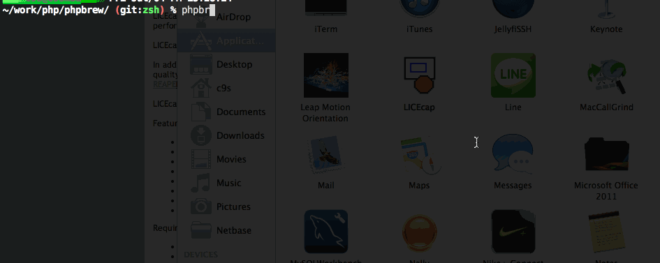
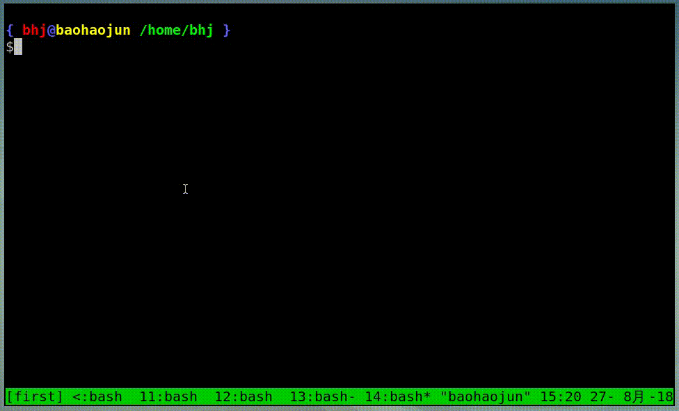

bash 下更方便的补齐选择方法
1 酷酷的 zsh 补齐机制
有一天有个同事过来告诉我，他用的是 zsh，这个 shell 下的补齐非常友好，允许你用方向键在各个候选项之间上下左右移动，然后问我 system-config 下能不能也加一个这样的功能。
他说的 zsh 的补齐是这样的：

我看完就心动了，这个功能好酷，我也想要这样的功能！所以我答应他我好好考虑一下。
2 system-config 下的解决方案
但是在 bash 下实现这样的功能真的比较困难，我又不想成为一个 bash 的核心开发者（想要一模一样的实现 zsh 的那种选择功能的话，必须修改 bash 的 c 代码 ），所以一直拖着没有开始干。
），所以一直拖着没有开始干。
拖了几个月之后，这个同事突然有一天变成前同事了 ，这让我很惭愧，觉得实在不能再拖下去了，于是硬着头皮用 bash 脚本写了一个类似的机制。
，这让我很惭愧，觉得实在不能再拖下去了，于是硬着头皮用 bash 脚本写了一个类似的机制。
这是我改出来的补齐方法（写完了之后才发现，好像比 zsh 的补齐更好用呢 ）：
）：

这里解释一下我执行的操作：
输入“
git”，然后按了一下F1快捷键补齐脚本提示了所有 git 的常用子命令供我选择，
- 我输入了“br<回车>”，脚本进一步缩小了匹配的常用 git 子命令的范围
- 我按下回车，直接选中第一个匹配的候选项，
branch - 我输入了 “
--”，然后又按了一下F1，脚本列出所有git branch命令允许的参数选项，我又输入了mer<回车>，细化了一下匹配项，然后直接回车，选中了--merged。 - 我直接按了一下
F1，脚本调用 bash 的自定义补齐机制，计算出此处可以提供的补齐是当前仓库的所有分支，于是列出这些分支让我选择 - 我输入了
ema<回车>极大地细化了一下候选项，然后输入2<回车>选中了第 2 个选项。
跟 zsh 的机制比起来，我的脚本在有巨多的候选项的情况下，允许进一步过滤细分、然后用序号选中；如果是 zsh 的话，即使用上下左右的移动，可能也要找很久。
当然，缺点也有很多：
- 界面比较简陋
毕竟不是 bash 内置的功能，在处理所有带空格等特殊字符的目录名补齐的时候，只能补齐一次，后面就无法正确的分词了。
比如在我的
${HOME}目录下，有一个名为VirtualBox VMs的目录，我如果输入cd vir然后按 F1 补齐的话，它能给我正确的补上cd VirtualBox\ VMs/，连空格前的反斜杠都给加上了，但你再按 F1 的话，虽然下面还有一个 Debian 目录，但因为分词的问题，我的脚本只能用 VMs 去算下一步的补齐，结果就补不出来了。如果按 Tab 的话，bash 自己的分词会用整个VirtualBox\ VMs/去补齐，结果就是正确的。不过这个问题其实也没什么，因为在处理特殊字符的时候，bash 自己也是问题很多的。比如你可以试试输入
echo $(git br然后按 Tab 键，bash 会出错的。后续我计划让我的脚本能处理这种补齐。
3 用法
- 升级一下 system-config（用 git pull 同步一下代码）
新开一个终端窗口（否则快捷键无法生效，见下面的说明），直接按一下 F1 键，会列出系统
$PATH路径里所有命令（包括 bash 的内置命令、alias 别名以及函数）有些终端窗口下 F1 可能已经有其他用途，比如打开当前终端窗口应用的帮助——这种情况下你可以考虑在它的设置里找找看能不能关闭这个快捷键。
如果你希望使用其他快捷键，比如 F2，请在你的
~/.bashrc的最后添加如下两行（然后再 新开一个终端窗口 才能生效。或者也可以直接在当前窗口下运行下面这两条命令）：. sc-complete
bind -x '"\eOQ": sc-complete'这里
\eOQ是通过 bash 终端读出来的F2的终端编码，你可以在 bash 下通过先按一下C-v，然后再按一下 F2 来读到这个代码，bash 会显示你输入了^[OQ，其中^[是一个特殊字符，其实就是 Escape 键的意思，在 bash bind 命令里用\e表示，你可以通过按 Escape 键输入它，也可以用Ctrl-[键输入。基本上所有的功能键F1~F12都有一个对应的终端编码，比如在我的系统上，在终端里按F1的效果，和按Escape、O、P这三个键的效果是完全一样的。
4 开发笔记
里面最坑的地方是我使用的 select-args 这个脚本，是 system-config 里很久以前就有的，这次在被用于补齐选择的时候，发现我输入的文字不会被终端回显。我像个瞎子一样摸索了很久，最后发现是 tty 终端的设置的问题，bash 在输入命令的过程中关闭了回显（所谓回显是指比如你按了个 c 的话，终端就会显示一个 c；关闭终端回显一般用于输入密码的情况下；bash 输入命令时你输入了一个 c，确实终端上也会显示一个 c，但是这个 c 是 bash 代码显示的，不是通过终端回显机制显示的！）
4.1 Org-mode Literate Programming
主要解决的痛点是在 bash 有很多补齐候选项的时候，我可以自己定义如何进行这些选项的选择。目前市面上已有的做法是：
bash，先提示你一下，有很多候选项，你要不要全部显示？然后你选 Yes，显示全部候选项之后，你只能自己继续打字输入候选词、再按几下 Tab 键或干脆改成用鼠标选中、拷贝、粘贴。
这种方法导致很多 Linux 命令行用户养成一个不管有没有用，下意识地按几下 Tab 键的习惯。
- zsh，我自己没有用过，但之前有个同事给我演示过，允许把所有选项列出来，然后你可以用方向键上下左右移动高亮某选项，然后回车选中它。
我希望把它改成这样子：我按一个键后，马上调用我的 my-select （或 select-args 等）脚本，把所有选项列出来让我选，选完了之后直接上屏。
4.2 最终的版本：
代码是用 Emacs org-mode 的 Literate Programming 写的（跟这篇博客在同一个．ｏｒｇ文件里）。可执行脚本的位置在 https://github.com/baohaojun/system-config/raw/master/bin/sc-complete。
emacs-complete() {
txt=~/.cache/system-config/ec.txt
tmux capture-pane -p > $txt
echo "$READLINE_LINE" >> $txt
ew $txt:$(wc -l $txt | pn 1):$((READLINE_POINT + 1)) >/dev/null 2>&1
find-or-exec konsole >/dev/null 2>&1
READLINE_LINE=$(cat $txt|tail -n 1)
READLINE_POINT=${#READLINE_LINE}
}
emacs-complete() {
txt=~/.cache/system-config/ec.txt
tmux capture-pane -p > $txt
echo "$READLINE_LINE" >> $txt
ew $txt:$(wc -l $txt | pn 1):$((READLINE_POINT + 1)) >/dev/null 2>&1
find-or-exec konsole >/dev/null 2>&1
READLINE_LINE=$(cat $txt|tail -n 1)
READLINE_POINT=${#READLINE_LINE}
}
function sc-complete() {
declare -x COMP_LINE=$READLINE_LINE
declare -x COMP_POINT=$READLINE_POINT
declare sc_line_before_point=${READLINE_LINE:0:$READLINE_POINT}
declare sc_line_after_point=${READLINE_LINE:$READLINE_POINT}
declare OLDIFS=$IFS
IFS=$COMP_WORDBREAKS
declare -a sc_comp_words_before_point=(
$sc_line_before_point
)
declare -a sc_comp_words_after_point=(
$sc_line_after_point
)
IFS=$OLDIFS
declare sc_last_word_before_point
if test ${#sc_comp_words_before_point[@]} -gt 0; then
sc_last_word_before_point=${sc_comp_words_before_point[${#sc_comp_words_before_point[@]} - 1]}
else
sc_last_word_before_point=""
fi
if test "${sc_line_before_point:${#sc_line_before_point}-${#sc_last_word_before_point}}" != "${sc_last_word_before_point}"; then
# There are other ``blank'' chars before the point, so there should be an empty WORD
sc_comp_words_before_point=(
"${sc_comp_words_before_point[@]}"
""
)
fi
declare -x COMP_WORDS=(
"${sc_comp_words_before_point[@]}"
"${sc_comp_words_after_point[@]}"
)
declare -x COMP_CWORD=$((${#sc_comp_words_before_point[@]} - 1)) || true
COMP_CWORD=$((COMP_CWORD < 0 ? 0 : COMP_CWORD))
declare current_word=${COMP_WORDS[$COMP_CWORD]}
declare -x COMP_KEY=9
declare -x COMP_TYPE=9
declare first_word=${COMP_WORDS[0]}
declare cword_minus_1=$((COMP_CWORD > 0 ? COMP_CWORD - 1 : 0))
declare comp_call_args=(
"$first_word"
"${COMP_WORDS[$COMP_CWORD]}"
"${COMP_WORDS[$cword_minus_1]}"
)
declare complete_spec=
declare -a COMPREPLY
local IFS=$'\n'
declare -A sc_comp_options
if test "${#sc_comp_words_before_point[@]}" -le 1; then
COMPREPLY=(
$(compgen -c "$first_word")
)
else
complete_spec=$(complete -p ${first_word} 2>/dev/null)
if test -z "${complete_spec}"; then
declare default_loader=$(complete -p -D | perl -ne 'print $1 if m/ (?:-F|-C) (\w+)/')
if test "${default_loader}"; then
${default_loader} "${comp_call_args[@]}"
fi
complete_spec=$(complete -p ${first_word} 2>/dev/null)
fi
if test "${complete_spec}"; then
compopt() {
while test $# != 0; do
if test $1 = -o; then
sc_comp_options[${2:-unknown}]=1
shift 2
else
shift 1
fi
done
}
declare complete_action
if echo "$complete_spec" | grep -P -q -e " -[FC] "; then
complete_action=$(echo "${complete_spec}" | perl -ne 'print $1 if m/ (?:-F|-C) (\w+)/')
else
complete_action=$(echo "${complete_spec% ${first_word}}"|perl -pe 's,^complete ,compgen ,')
fi
if test "$(type -t "${complete_action}")" = function; then
${complete_action} 2>/dev/null
else
COMPREPLY=(
$( eval ${complete_action} 2>/dev/null)
)
fi
unset -f compopt
fi
fi
if test "${#COMPREPLY[@]}" = 0 && (
test -z "${complete_spec}" ||
[[ $complete_spec =~ '-o default' ]]
); then
COMPREPLY=(
$(
for x in "${COMP_WORDS[$COMP_CWORD]}"*; do
if test "${x}" != "${COMP_WORDS[$COMP_CWORD]}"\*; then
echo "${x}"
fi
done
)
)
fi
if test "${#COMPREPLY[@]}" = 0; then
return
fi
declare comp_ans=$(. atexit stty -echo; stty echo; select-args -p "请选择你要哪个补齐？" -- "${COMPREPLY[@]}")
if test "${sc_comp_options[filenames]}"; then
if test -d "${comp_ans}"; then
comp_ans=$comp_ans/
fi
comp_ans=$(printf %q "$comp_ans")
fi
READLINE_LINE=${sc_line_before_point%${current_word}}${comp_ans}
READLINE_POINT=${#READLINE_LINE}
READLINE_LINE=${READLINE_LINE}${sc_line_after_point}
}
bind -x '"\eOP": sc-complete'
bind -x '"\eOQ": emacs-complete'
# Local Variables: #
# eval: (read-only-mode 1) #
# End: #